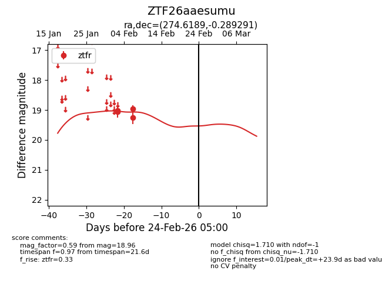
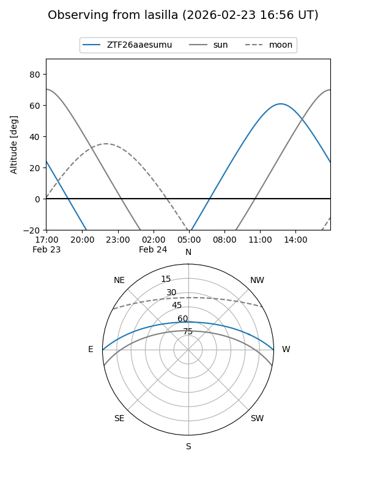
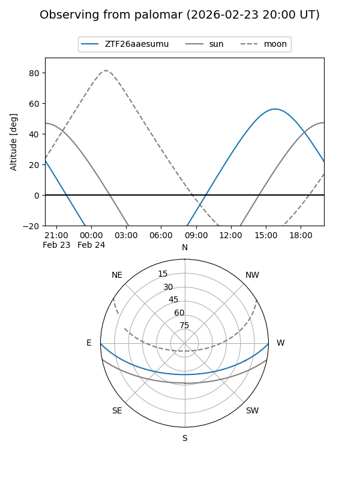

ZTF26aaesumu
Target ZTF26aaesumu at 2026-02-24 09:08
Aliases and brokers:
FINK: link
Lasair: link
ALeRCE: link
alt names
ZTF26aaesumu (ztf,fink_ztf)
Coordinates:
equatorial (ra, dec) = 274.6189,-0.28929
equatorial (HMS+DMS) = 18:18:28.54,-00:17:21.45
galactic (l, b) = (28.8948,+7.19564)
Flags:
Photometry:
last ztfr=18.96
4 ztfr detections
Lightcurve

Visibility


Additional plots